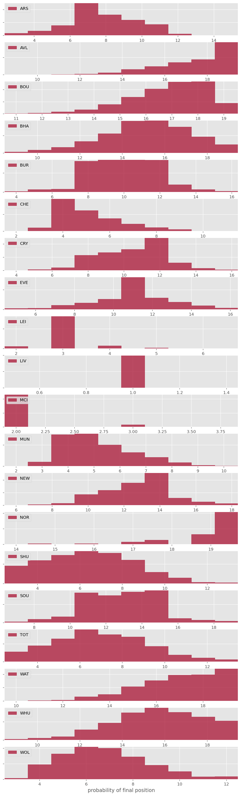
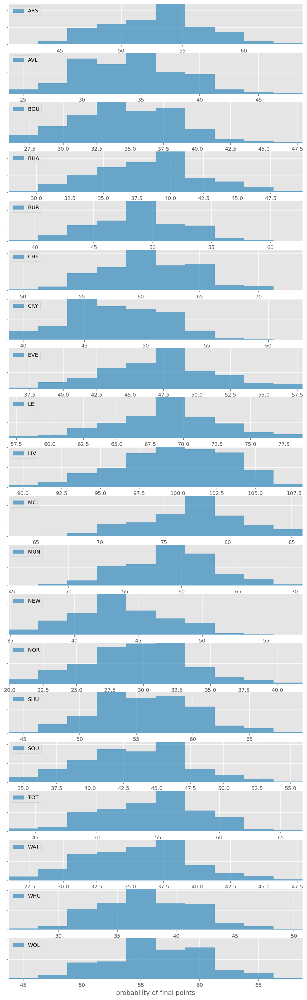
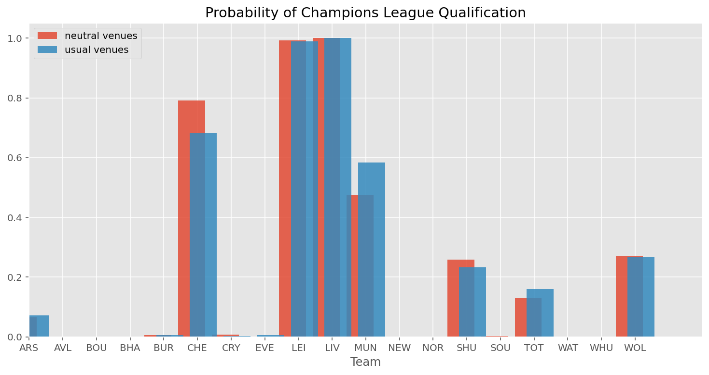
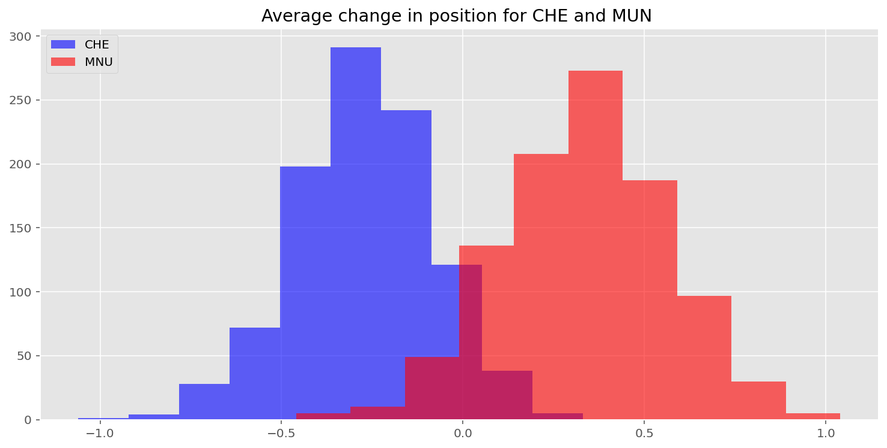
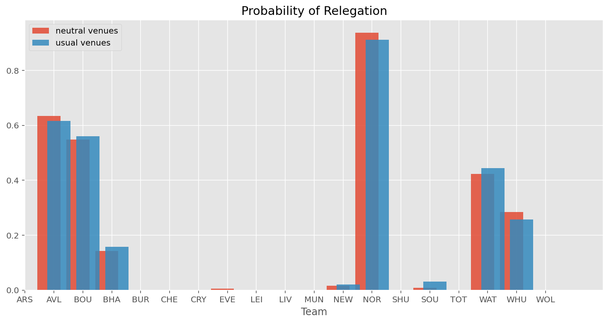

tl;dr Liverpool probably break the 100 point record, Sheffield United make it to the Champions League 1 in 4 times, playing out the season in neutral venues benefits Chelsea but disadvantages Manchester United
With the 2019/20 premier league on standby due to coronavirus, many people are wondering what will happen with the rest of the season. With the power of a hierarchical bayesian model and the data from the season so far I'll try to predict the final standings for each team.
If you don't like looking at equations you might want to scroll down to the results. You can also check out the code on github.
Assumptions in the model
Before we get into the equations, let's think about how you would predict the goals scored in a football game for each side and how our predictions might change when we have more information. Imagine I asked you to predict the score between team A and B in the premier league without telling you thee names of team A or B. What you'd probably end up doing is predicting that team A scored the average amount of goals for a team in the premier league and team B scored the same (this is pretty much what the intercept in our model below is).
Then what would you predict if you found out that team A was Liverpool? Mane is playing pretty well so you might bump up the expected goals for team A. VVD is the best center back in the league so you'd probably wager that team B would score a bit less than the average. That tells us that the XG (expected goals) for team A is a function of team A's attack ability and XG for team B is a function of team A's defensive ability.
There's nothing special about knowing team A, if we knew team B then we would adjust our expectations the same way, i.e. XG of team A depends on team A's attacking ability and team B's defensice ability.
And if the game was at Anfield, Liverpool's homeground, then you'd give even more of an advantage to a Liverpool win, but the home field advantage isn't the same for every team (for example Southampton have a better record during away games) so you'd want to take into account the boost in performance of playing at home.
That's a long way of saying:
$ XG_{a} = f(att_{a}, def_{b}, home_{a}, intercept) $
Were \(att\) and \(def\) attributes are measures of ability when the team plays in an away game, similarly the expected goals of team B, the away team, are:
Alterntively instead of thinking about what we would like to know before we predict a scoreline we might think about what we learn when we see a scoreline. For instance if we saw a scoreline of 96-98 we can safely assume that each team have some attacking ability, that each team probably has some defensive ability, that the home advantage wasn't enough to give team A a victory and that we're witnessing a sport which has relatively high scorelines e.g. basketball (in this case we learn that the intercept value would be high).
At least that's the assumptions going into this model, which is based off of Daniel Weitzenfeld's blog post but with a few alterations. Here's the equations:
Results
I simulated the remaining season games 1000 times with the above model.
Predicted positions
Although it's mathematically possible for Manchester City to come first, across the 1000 simulations that I ran Liverpool always came in first. Sheffield united have a 1 in 4 chance of getting a Champions League spot. Norwich are relegated 9/10 times and Aston Villa end up relegated approximately 2 thirds of the time.

Predicted points
Liverpool have an even chance of breaking 100 points and beating Manchester City's record for most points in a single season.

Probability of Champions League spot
With a regular season restart out of the picture until next year, some people have been proposing the idea of playing all remaining games in a COVID-19 free bubble i.e. in neutral stadiums without crowds. If this were to happen then the scheduled 'home' team will miss out on their home advantage, which could be argued is a natural part of the game. I ran the same 1000 season siulations for the remaining games, this time without the home advantage.

Most teams would be unaffected by moving the matches to a neutral venue but Manchester United would end up with a champions league spot 10% less often under the changed conditions while Chelsea absorb almost all of the benefits. I wanted to verify that this wasn't just a sampling error, so I used bootstrapping to draw up some confidence intervals below. Roughly 95% of the time Chelsea benefit more than Manchester United by the change to a neutral venue.

Probability of Relegation
The change to venues doesn't affect the race to the bottom, suggesting that all of the bottom teams benefit in roughly the same proportion when they play at home.
